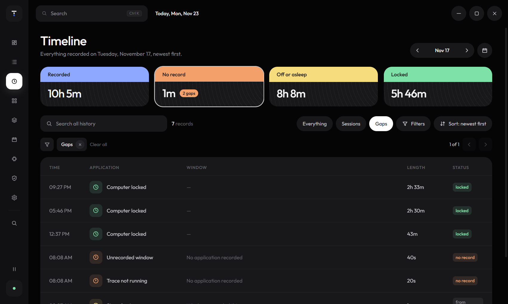
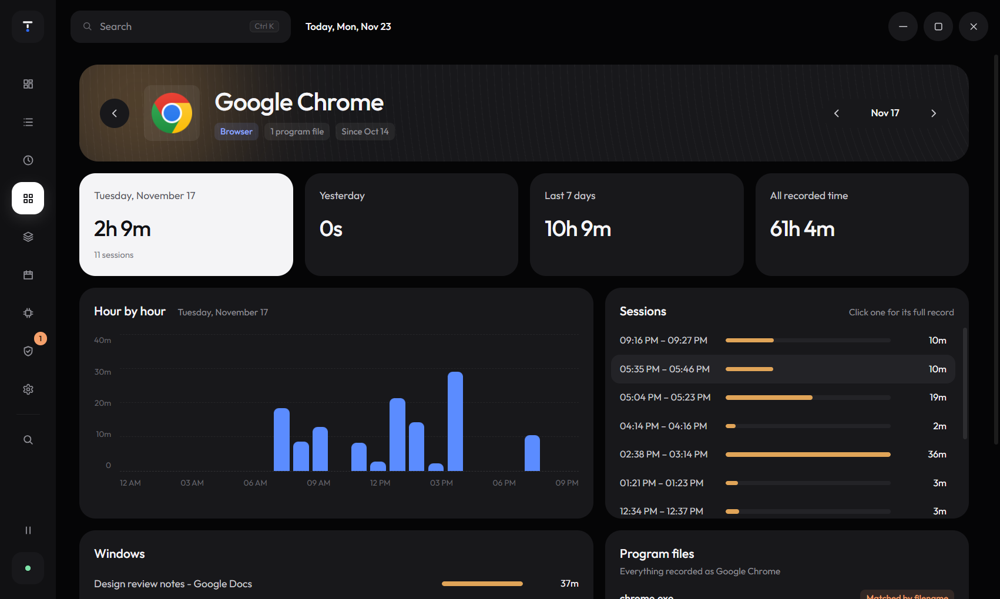

3Delivered so far
The following milestones are complete, tested and installed on the owner's computer.
| Milestone | Delivered | State |
|---|---|---|
| 0 and 1, Foundation | Toolchain, repository layout, both projects, shared contracts, logging and build scripts. | Done |
| 2, Proof of concept | A diagnose mode printing live foreground, title, idle, lock and power state. | Done |
| 3, Session engine | Signal queue, state machine, idle backdating and time accumulators. | Done |
| 4, Database | Migrations, repositories, queries, heartbeat and crash recovery. | Done |
| 5, Pipe interface | Named pipe server with an owner-only access list and the version 1 contract. | Done |
| 6, Core dashboard | Overview, timeline, applications and live activity on real data. | Done |
| 7, Privacy controls | Pause, exclusions, title switch, deletion, export and first-run onboarding. | Done |
| 8, Windows integration | Tray, start with Windows, installer, uninstall choices and shutdown handling. | Done |
| 9, Hardening | Corrupt database recovery, large history queries and the local midnight fix. | Done |
| V2 | Calendar, custom title bar and the marketing website. | Done |
| 2.0, version 0.2 | Correct application names, icons, background apps, Windows system records, coverage and the redesigned dashboard. | Installed |
| Protection, version 0.3 | Trace PIN, recovery code, lockout, guarded settings, settings repair, auto-restart task and tamper log. | Installed, end-to-end check pending |
Current measures: 5 database migrations, 180 recorder tests and 35 dashboard tests passing, installer size 132.5 MB.
What the delivered milestones look like



